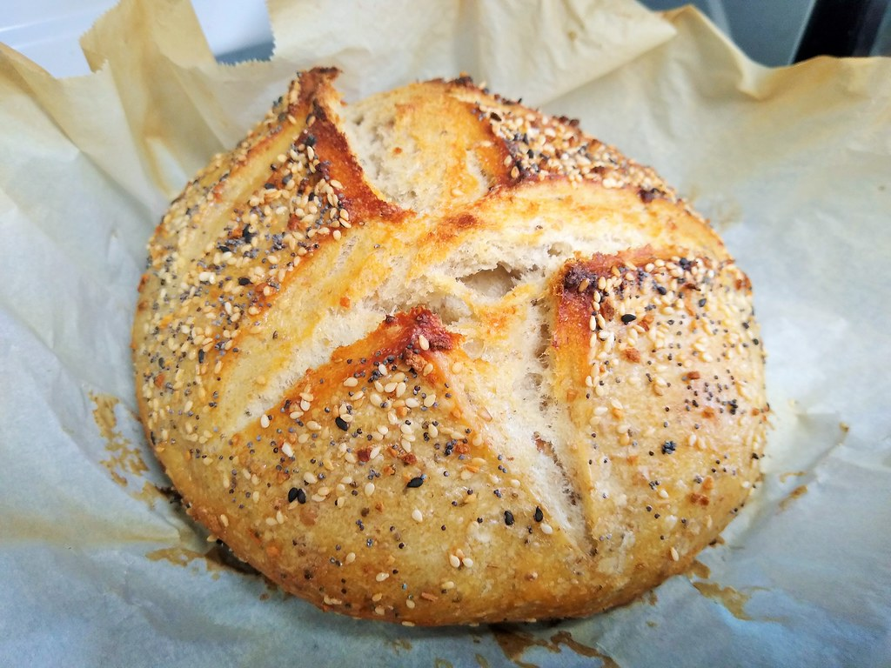
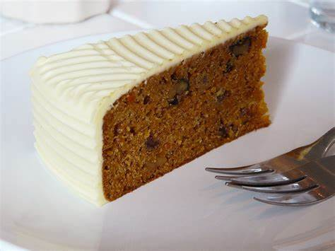

Hello and welcome to my website! Are you here because of your interest in baking? Well you have come to the right place! My name is Denzel, 28 years old. I am an aspiring baker that comes from Seattle. I would love to share you 3 recipes of mine that you can try out for yourself!
Some Recipes I Have Tried:
Almond Croissants
A delicate pastry filled with the sweet nutty goodness of almond paste, dusted with powdered sugar, and baked to a golden perfection.
Ingredients:
1 sheet of puff pastry.
1/2 cup of almond paste.
1/4 cup of powdered sugar.
1 egg (for egg wash)
Instructions:
First, preheat the oven to 375°F.
Next, roll out the puff pastry and cut it into triangles.
Spread a thin layer of almond paste on each triangle.
Then, roll each triangle from the base to the tip and curve into a crescent shape.
Finally, brush with egg wash and sprinkle with powdered sugar, and bake for 15-20 minutes until it’s golden brown.
Sourdough Bread

A community favorite, boasting a crusty exterior and a soft, airy interior, embodying the classic sourdough charm.
Ingredients:
1 cup sourdough starter.
One 1/2 cups warm water.
4 cups bread flour.
One 1/2 teaspoons salt.
Instructions:
First, mix the starter, water, and 3 cups of flour in a large bowl. This should create a sticky dough.
Next, add salt, and remaining flour 1 tablespoon at a time until they are fully incorporated.
Then, knead the dough on a floured surface for about 15 minutes.
Once the kneading is done, place the dough in a lightly greased bowl, cover it, and let it rise for about 5 hours.
Finally, shape the dough into a loaf, and let it rest for 30 minutes. When you are ready to bake, preheat your oven to 450°F and bake for about 30 minutes until it's golden brown.
Classic Carrot Cake

An homage to tradition and familial bonds, enriched with the natural sweetness of carrots and a crunch of walnuts, it holds a special place in my heart as it was my late grandfather's favorite. Every year on my grandfather's birthday, I bake this cake to honor his memory and the bond we shared over the love of baking.
Ingredients:
2 cups all-purpose flour.
2 cups granulated sugar.
1 teaspoon baking soda.
2 teaspoons cinnamon.
1/2 teaspoon salt.
1 cup vegetable oil.
4 large eggs.
2 cups grated carrots.
1 cup crushed pineapple.
1/2 cup chopped walnuts.
Instructions:
First, preheat the oven to 350°F.
Next, mix together the flour, sugar, baking soda, cinnamon, and salt in a large bowl.
Then, stir in the oil and eggs until smooth.
Fold in the carrots, pineapple, and walnuts and then pour the batter into a greased baking pan and bake for 30-35 minutes.
Make sure you allow the cake to cool before frosting with cream cheese frosting.
Where you can contact me:
If you'd like to give me some feed back or if you are in need of some guidance in the jouney of baking, you can contact me with these: